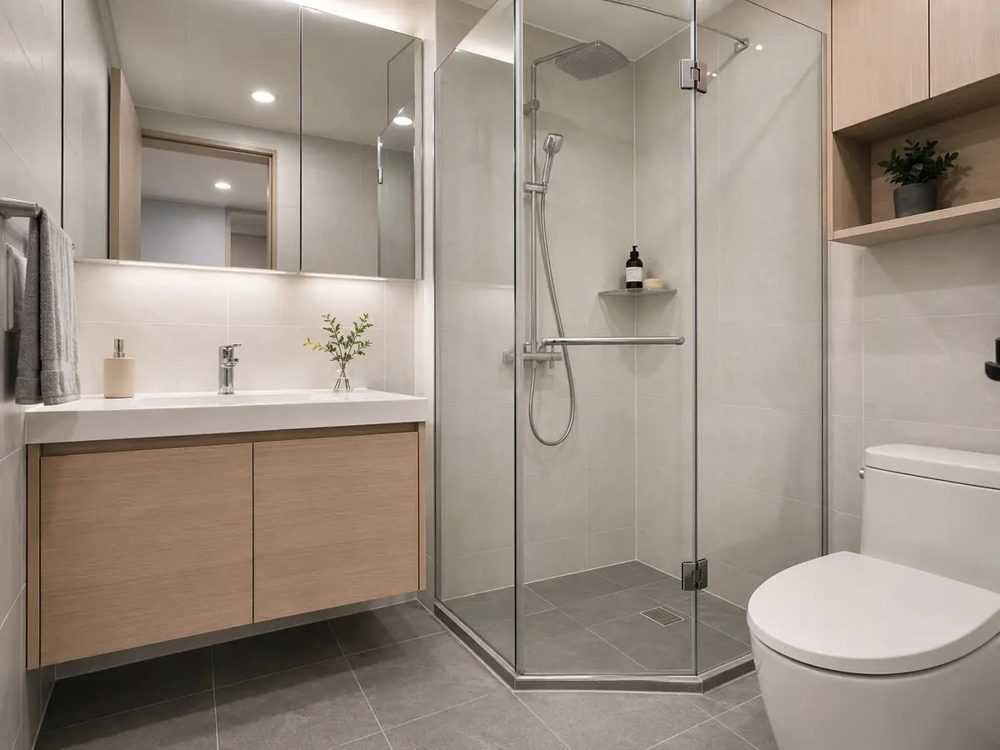
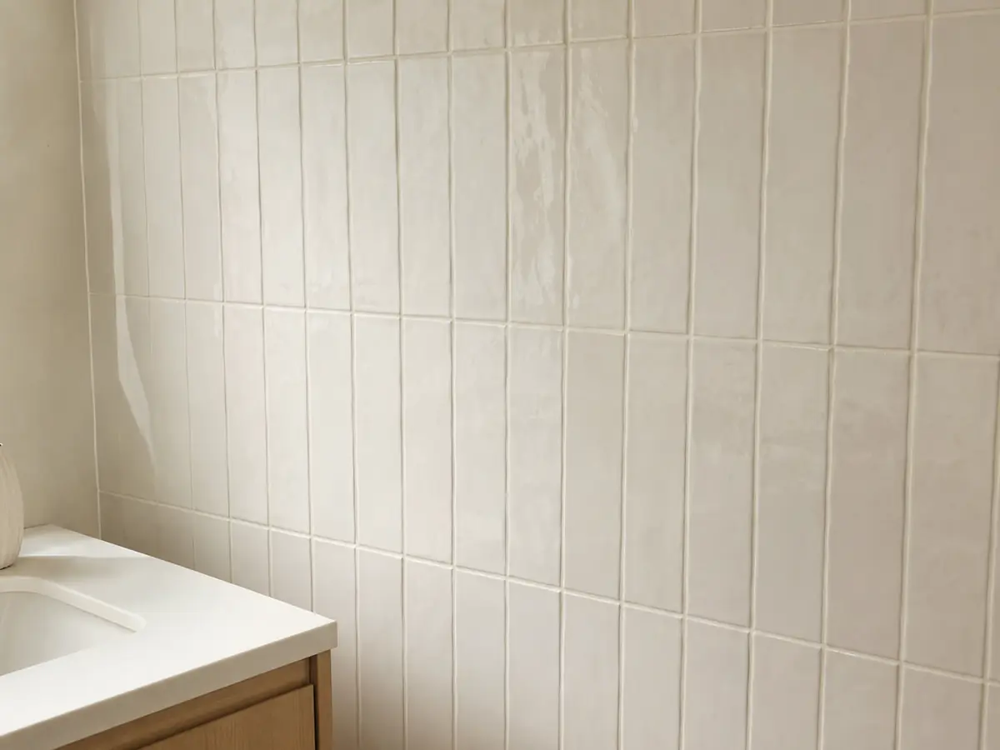
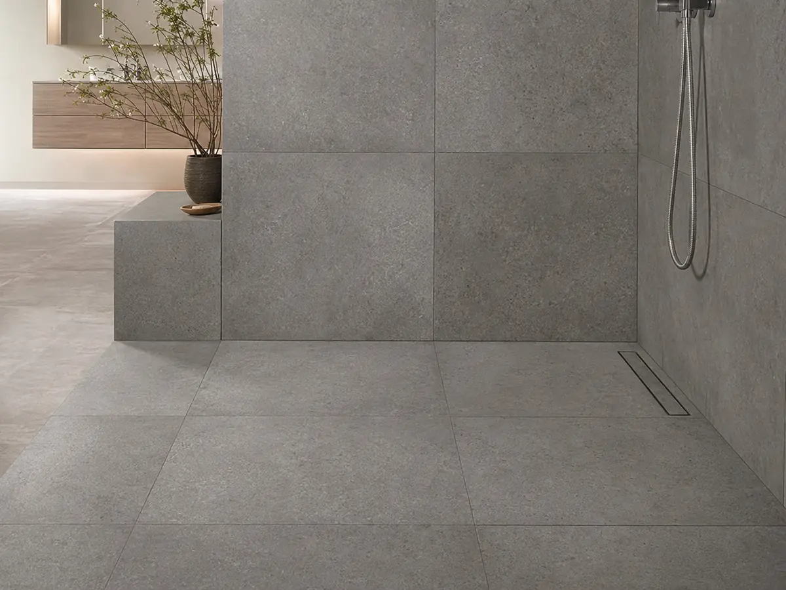
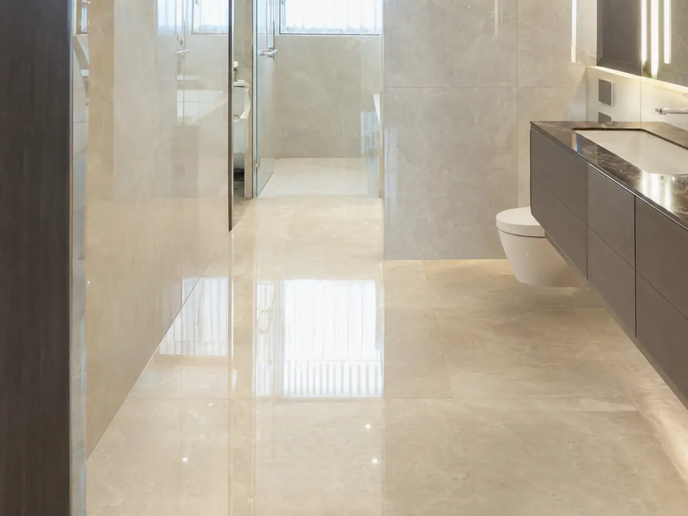

욕실 가이드
욕실 공사의 90%는 방수와 환기입니다. 눈에 보이지 않는 이 두 공정에서 비용을 아끼면 아래층 누수와 곰팡이로 돌아옵니다. 공정 순서부터 도기·수전 선택, 하자 예방까지 정리했습니다.
이 글에서 알 수 있는 내용
- 철거부터 검수까지 욕실 공정 순서
- 하자 1순위인 방수의 표준(2회 도포·건조·누수 테스트)
- 곰팡이를 막는 환기(환풍기 풍량·덕트) 기준
- 도기·수전 선택과 미끄럼 저항 타일
- 평수별 표준 비용·기간과 대표 하자
보이지 않는 방수·구배·환기가 욕실 하자를 좌우합니다. 방수는 2회 도포 + 건조시간 준수 + 담수(누수) 테스트가 표준이고, 욕실 바닥 타일은 미끄럼 저항 R10~R11의 포세린을 쓰세요. 유광 폴리싱은 바닥에 부적합합니다.
평수별 표준 비용·기간
자재 등급에 따라 편차가 크므로(±30%) 아래는 전체 교체 기준의 참고치입니다.
서울 기준 2026.05. 시장 관행 기반 참고치.
| 욕실 크기 | 표준 비용 | 공기 | 비고 |
|---|---|---|---|
| 0.5~1평 (분리형) | 250~400만원 | 3~4일 | 전체 교체 기준 |
| 1.5평 (안방) | 400~700만원 | 4~5일 | 가장 대중적 |
| 2평 이상 (확장형) | 700만~1,200만원 | 5~7일 | 욕조·샤워부스 분리 |
← 표는 좌우로 넘겨 볼 수 있어요
공정 순서
공정마다 건조·양생 시간이 필요합니다. 방수·구배는 덮이면 못 보므로 사진 기록을 남기세요.
- 철거 — 타일·도기·수전·천장 (1일)
- 배관·전기 — 수전 위치 변경, 환기·콘센트 (1일)
- 방수 — 2회 도포, 건조 24시간씩 — 가장 중요
- 미장·구배 — 바닥 물 빠짐 경사 (1~2%)
- 타일 — 벽 → 바닥 순서 (1~2일)
- 줄눈·코킹 — 코너 실리콘 마감
- 도기·수전 — 변기·세면대·욕조·샤워 (반나절)
- 천장·환풍기 — SMC 천장 + 환풍기 (반나절)
- 검수·청소 — 누수 테스트(24시간 담수), 청소
방수 — 가장 중요한 한 가지
방수 부실은 아래층 누수로 이어져 시공사 분쟁의 1순위가 됩니다.
환기 — 곰팡이 예방의 핵심
환풍기 풍량과 덕트 경로가 곰팡이 발생을 좌우합니다.
- 환풍기 풍량 — 1.5평 기준 60~80 m³/h. 약하면 곰팡이 직행.
- 창문 유무 — 창이 있어도 환풍기는 필수(겨울 환기).
- 덕트 길이 — 길고 굽이 많을수록 풍량 감소. 가급적 직선.
- 타이머·습도센서 — 자동 운전 모델이 관리 편함.
도기·수전·타일 선택
수전은 카트리지 품질이 수명을 좌우하고, 바닥 타일은 미끄럼 저항이 안전을 좌우합니다.
실물 예시로 보는 자재




구매 전 확인할 스펙
방수 층수와 담수 시험, 저소음 환풍기 등 견적서에 명시할 항목입니다.
| 항목 | 기준 | 보는 법 |
|---|---|---|
| 방수 | 액체+도막 2중 · 담수 테스트 | 욕실 하자의 핵심 — 방수 층수·담수 시험 여부 명시 |
| 양변기 | 투피스 / 원피스 / 벽걸이 | 절수 등급·도기 유약 품질 · 벽걸이는 배관 조건 확인 |
| 세면기·수전 | 수전 카트리지(세라믹) 품질 | 수전은 카트리지가 수명 좌우 — 정품/수입 명시 |
| 타일 | 바닥 R10~R11 논슬립 포세린 | 유광 폴리싱 바닥은 미끄럼 사고 위험 |
| 부속 | 유가(배수구)·젠다이·돔천장·환풍기 | 저소음 환풍기·역류방지 댐퍼 포함 여부 |
| 실리콘 | 바이오(방곰팡이) 실리콘 | 마감 실리콘 등급까지 견적서에 표기 |
← 표는 좌우로 넘겨 볼 수 있어요
브랜드별 특징
욕실은 브랜드 도기보다 방수·구배 시공이 하자를 더 좌우합니다. 도기·수전은 절수 등급과 카트리지 품질, AS 경로를 함께 확인하세요.
| 브랜드 | 주요 강점·제품군 | 검토 시 살펴볼 점 |
|---|---|---|
| 대림바스 | 국내 도기 라인업 · 부품 수급·AS 용이 | 모델별 절수 등급·부품 호환 확인 |
| 아메리칸스탠다드 | 글로벌 라인업 · 절수·세정 기술 | 정식 수입·AS 경로 확인 |
| 이누스(inus) | 디자인·일체형 비데 라인 | 비데 콘센트·배관 조건 확인 |
| 로얄앤컴퍼니 | 수전 라인업 · 카트리지 품질 | 수전만 업그레이드 시도 유효 |
| 그로헤·한스그로헤 | 수입 수전 라인업 · 내구·수압 | 정식 수입·AS 경로 확인 |
브랜드 도기를 쓰더라도 방수 시공 사진을 남기세요.
최종 선택 체크리스트
자주 묻는 질문
방수가 제대로 됐는지 어떻게 확인하나요?
방수 후 바닥에 물을 채워 24시간 두는 담수(누수) 테스트로 아래층 천장을 확인합니다. 계약서에 담수 테스트를 시공사 책임으로 명기해 두면 분쟁 예방에 도움이 됩니다.
창문이 있는데 환풍기가 꼭 필요한가요?
필요합니다. 창을 열기 어려운 겨울철 환기를 위해 창이 있어도 환풍기는 필수이며, 1.5평 기준 60~80 m³/h 풍량과 짧은 덕트 경로가 곰팡이를 줄입니다.
욕실 바닥에 어떤 타일을 써야 하나요?
미끄럼 저항 R10~R11의 자기질(포세린) 논슬립 타일을 권합니다. 유광 폴리싱은 물에 젖으면 미끄러워 욕실 바닥에 부적합합니다.
줄눈이 금방 변색됐어요.
일반 백시멘트 줄눈은 1~2년 내 변색될 수 있습니다. 방수·곰팡이에 강한 에폭시 줄눈으로 갈음하면 오염이 줄어듭니다.
출처
- 건축공사 표준시방서 — 방수공사·타일공사·위생설비
- KS F 4919 (시멘트계 방수재)
- 건설산업기본법 시행령 별표4 (하자담보책임기간)